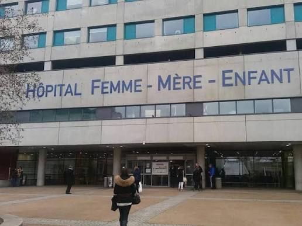
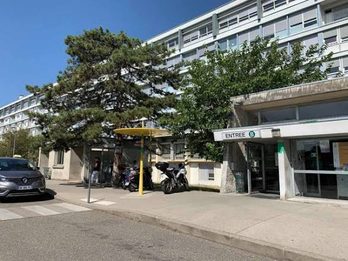

Le point central de l’équipe se trouve à l’HFME. C’est l’un des principaux lieux d’organisation des missions et de rencontre des brancardiers.

La salle de pause de l’hôpital neurologique sert de point de rencontre. Vous pourrez régulièrement y retrouver plusieurs brancardiers et demander un repère ou une information.
Me guider à pied
L’équipe ne dispose pas d’un véritable local central. Une petite salle de pause sert néanmoins de point de repère. Des fauteuils utilisés pour les transports peuvent également se trouver à proximité.
Le self permet de prendre son repas sur place. Il ouvre à 11 h 30 en semaine et à 12 h le week-end. L’heure de fermeture reste à compléter.
Le repas se règle avec le badge professionnel. Le badge peut être rechargé à proximité de la salle de pause de Cardio.
Me guider à pied